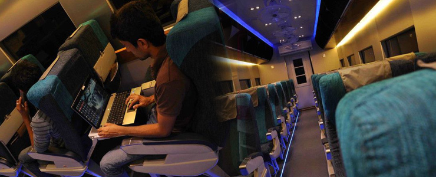

Fast-Passenger Trains offer semi-express service between Colombo and other major outstations. Accommodation includes unreserved 2nd and 3rd Class seats, reserved 2nd and 3rd Class seats, reserved 1st Class Observation Saloon , and reserved 1st Class Sleeping Berths. Reserved 1st Class Air-conditioned service is offered only on some routes.
Intercity express: Among the fastest trains, with few stops (have to get special tickets for these; ticket prices are higher than normal ones)